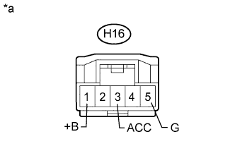

DTC B1569 Привод DVD-ROM отсоединен |
| Код DTC | Условие обнаружения DTC | Неисправный участок |
| B1569 | Выполняется любое из следующих условий:
|
|
| 1.ПРОВЕРЬТЕ НАЛИЧИЕ ДОПОЛНИТЕЛЬНЫХ УСТРОЙСТВ (ВКЛЮЧАЯ СООТВЕТСТВУЮЩУЮ ПРОВОДКУ) |
Проверьте наличие дополнительных устройств.
Убедитесь, что не установлены дополнительные устройства (включая соответствующую проводку), генерирующие радиосигналы.
| Результат | Следующий шаг |
| Дополнительные устройства (включая соответствующую проводку) установлены | А |
| Дополнительные устройства (включая соответствующую проводку) не установлены | B |
|
| ||||
| А | |
| 2.УДАЛИТЕ ДОПОЛНИТЕЛЬНЫЕ УСТРОЙСТВА (ВКЛЮЧАЯ СООТВЕТСТВУЮЩУЮ ПРОВОДКУ) |
Удалите дополнительные устройства (включая соответствующую проводку).
| ДАЛЕЕ | |
| 3.ПРОВЕРЬТЕ DTC |
Удалите коды DTC (Нажмите здесь).
Проверьте коды DTC и проверьте, возникает ли эта же неисправность снова.
|
| ||||
| OK | ||
| ||
| 4.ПРОВЕРЬТЕ ЖГУТ ПРОВОДОВ И РАЗЪЕМ (ИСТОЧНИК ПИТАНИЯ ПАНЕЛИ МОДУЛЯ СИСТЕМЫ НАВИГАЦИИ) |
|  |
Отсоедините разъем H16 панели модуля системы навигации.
Измерьте сопротивление в соответствии со значениями, приведенными в таблице ниже.
| Контакты для подключения диагностического прибора | Режим | Заданные условия |
| H16-5 (G) - масса | Всегда | Менее 1 Ом |
Измерьте напряжение в соответствии со значениями, приведенными в таблице.
| Контакты для подключения диагностического прибора | Положение переключателя | Заданные условия |
| H16-1 (+B) - H16-5 (G) | Всегда | 11-14 В |
| H16-3 (ACC) - H16-5 (G) | Замок зажигания в положении ACC | 11-14 В |
| *a | Вид спереди разъема со стороны жгута проводов: (к панели модуля системы навигации) |
|
| ||||
| OK | |
| 5.ПРОВЕРЬТЕ РАЗЪЕМ КАБЕЛЯ IEEE |
Проверьте разъем кабеля IEEE.
Проверьте надежность подключения разъемов кабеля IEEE между панелью модуля системы навигации и дисплеем модуля системы навигации и индикации (Нажмите здесь).
Убедитесь в том, что экран отображается правильно.
|
| ||||
| OK | ||
| ||
| 6.ЗАМЕНИТЕ КАБЕЛЬ IEEE |
Замените кабель IEEE между панелью модуля системы навигации и дисплеем модуля системы навигации и индикации.
Убедитесь в том, что экран отображается правильно.
|
| ||||
| OK | ||
| ||
| 7.ЗАМЕНИТЕ ПАНЕЛЬ МОДУЛЯ СИСТЕМЫ НАВИГАЦИИ |
Замените панель модуля системы навигации (Нажмите здесь).
Сбросьте коды DTC (Нажмите здесь).
Проверьте коды DTC и проверьте, возникает ли эта же неисправность снова.
|
| ||||
| OK | ||
| ||